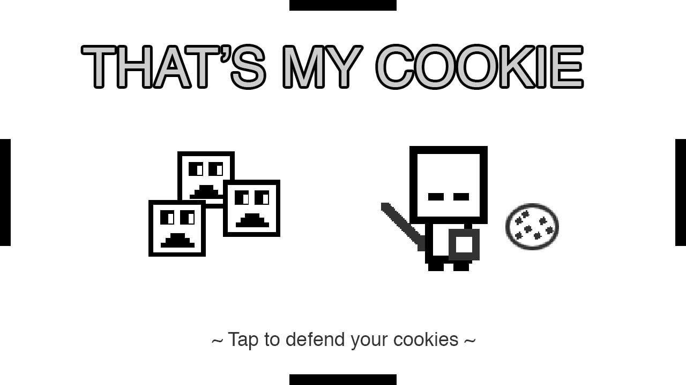
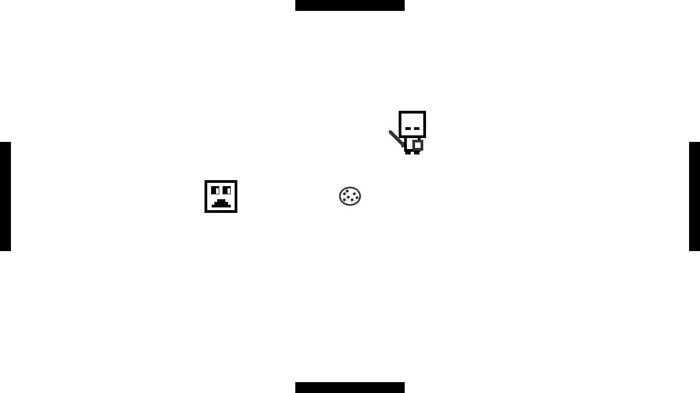
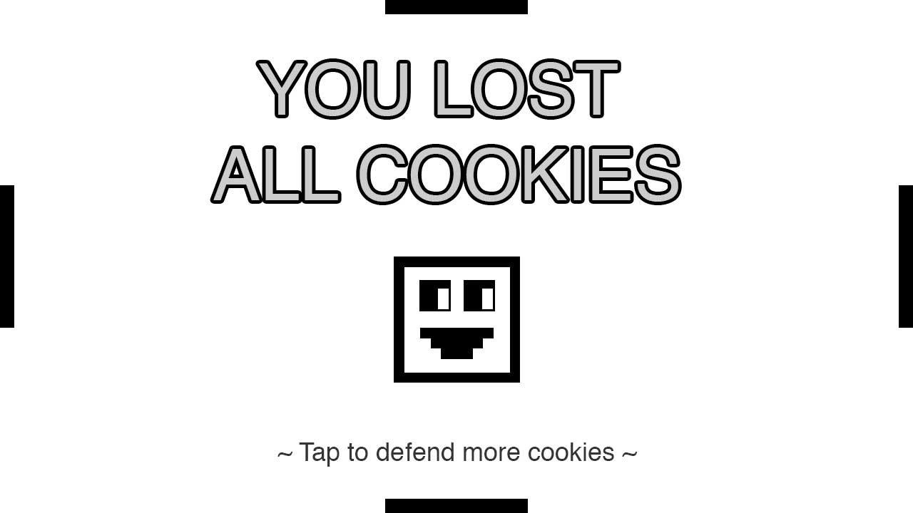

Mais uma edição da game jam Ludum Dare passou, e desta vez o tema escolhido foi One Room (um quarto/espaço/local). Demorei para pensar no que fazer, e uma das opções que quase desenvolvi foi uma versão simplificada do jogo de tabuleiro Detetive em um quarto de hotel, algo meio adventure game. Como isso iria exigir mais arte do que consigo produzir (por ser programador), eu descartei a ideia.
Com o tempo se esgotando ao meio dia do domingo decidi fazer algo simples para poder terminar um jogo nesta edição do Ludum Dare, então minha ideia foi fazer um jogo onde com cavaleiro fica no centro de uma sala defendendo cookies de monstros que querem roubar. Assim nasceu o jogo monocromático That's My Cookie (aquele é o meu cookie), que demorou pouco menos de 8 horas para ser produzido.
Neste link você pode baixar o jogo para Android, macOS e Windows, e também o seu código fonte.
Game Design

A ideia era simples: uma sala, o jogador controla o cavaleiro para atacar os monstros e os monstros vão em direção ao cookie (não ao jogador). Um monstro entra na sala por uma das 4 portas e tenta ir em direção aos 3 cookies no centro da sala, e o jogador deve matar o monstro antes dele pegar o cookie.
Eu quiz simplificar os controles e que fosse algo simples de jogar em um dispositivo móvel, então para jogar basta clicar ou tocar na tela e o cavaleiro vai naquela direção. Para simplificar ainda mais, o cavaleiro muda para o modo ataque enquanto se move, e volta para o estado parado se o jogador não tocar na tela.
Quando os monstros pegarem os 3 cookies o jogo termina e a pontuação do jogador é o número de monstros que ele conseguiu matar antes de roubarem seus cookies. É um fim triste para o jogador, mas os monstros ficaram felizes com os cookies (olha a imagem da tela de game over).
Programação

Eu estava planejando utilizar o GameMaker ou a Torque 2D neste Ludum Dare, porém os dois softwares funcionam apenas em Windows e no momento estou só com meu Macbook. Por isso acabei escolhendo utilizar a cocos2d-x novamente e fazer o jogo em C++. Como tinha pouco tempo para fazer, já que demorei para pensar no que fazer, acabei ganhando tempo utilizando algo que eu já conhecia.
Fazer os monstros terem um caminho único, em direção ao cookie, facilitou bastante a programação. Não precisei me preocupar em fazer o monstro perseguir o jogador, ele apenas vai em direção ao cookie. O spawn deles também foi bem simples e eu utilizei o mesmo monstro sempre, sem precisar instanciar novos monstros todo vez que for necessário fazer ele aparecer pela porta.
Desta vez organizei melhor o projeto criando cenas diferentes para cada tela (início, jogo e game over) e criando classes para cada camada da tela. Tentei evitar utilizar singleton para acessar os objetos, mas não tive como fugir disso já que tinha pouco tempo e precisava de algo rápido.
Arte

Não sei explicar por que decidi fazer o jogo monocromático, mas acabei ganhando tempo não precisando pensar em cores para o jogo. O personagem tem apenas duas animações, uma parado e uma em ataque, e elas são trocadas de acordo com a ação do usuário. Na verdade nem posso chamar isso de animação, por que não utilizei uma classe de animação da cocos2d-x, são apenas dois sprites que ficam visíveis de acordo com o estado do input.
As telas de início e game over são duas imagens que fiz no Photoshop, não são montadas no jogo, por isso na tela de game over não aparecer a pontuação do jogador.
Conclusão
Não foi minha melhor participação, mas também não foi minha pior (eu acho). Além de não saber o que fazer eu estava desanimado para participar, e fiz um pouco obrigado. Tive o fim de semana todo livre, mas só comecei a fazer algo no meio dia do domingo. Provavelmente se eu estivesse motivado faria esse mesmo jogo na metade do tempo, ou usaria os dois dias para fazer um jogo maior e mais ambicioso.
Terminei o jogo às 19h e não queria mais trabalhar nele, fiquei mais uma hora para montar a página no Ludum Dare e gerar as builds. O prazo terminaria meia noite, mas eu não estava com vontade de continuar e nem quis fazer música ou efeitos sonoros para o jogo. Infelizmente, isso acontece.
O próximo Ludum Dare vai ser em comemoração aos 15 anos do game jam, e vou tentar me preparar melhor. Provavelmente usarei alguma engine que eu já conheço para tentar focar mais no game design, fazer algo mais divertido.